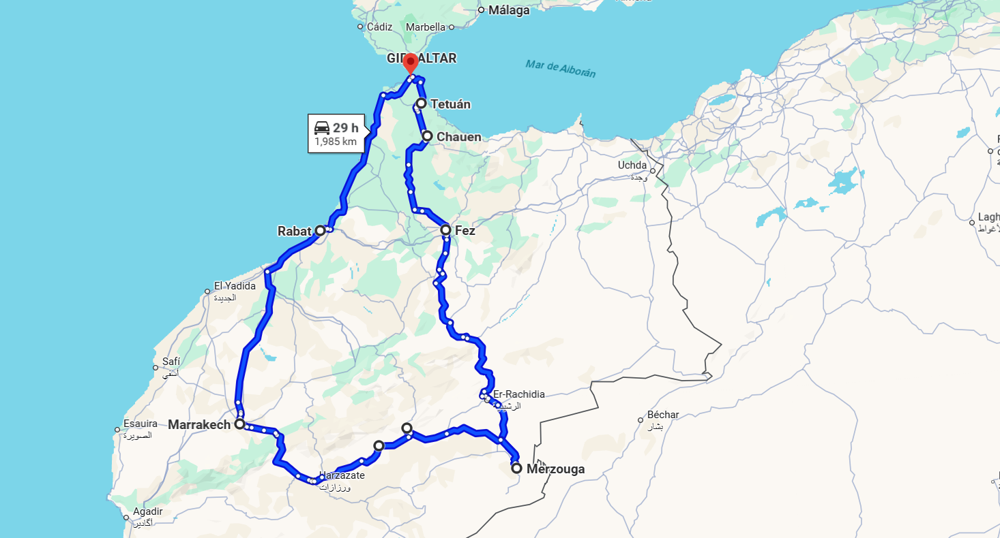

RUTA EN MOTO POR MARRUECOS INTERIOR
RUTA DE LOS CINCO ELEMENTOS DE MARRUECOS
Viajar en moto desde Algeciras hacia Marruecos es abrir la puerta a un itinerario fascinante que comienza en el puerto de Tánger Med y se adentra en la diversidad cultural y geográfica del país. Desde los primeros kilómetros, la sensación de aventura está presente: la brisa del Estrecho, las montañas del Rif al horizonte y el magnetismo de un territorio lleno de contrastes que invita a recorrerlo sin prisa.
La ruta nos lleva primero a Chauen, la ciudad azul, un lugar de calma y belleza donde las callejuelas pintadas de tonos celestes parecen detener el tiempo. Continuamos hacia Fez, con su medina laberíntica, donde la tradición artesanal y la historia se entrelazan en cada rincón. La carretera se convierte en compañera inseparable hasta alcanzar uno de los grandes hitos del viaje: el desierto de Merzouga. Allí, las dunas doradas del Sahara ofrecen un espectáculo único; conducir entre paisajes áridos, sentir la inmensidad del horizonte y contemplar el atardecer sobre la arena es una experiencia que queda grabada para siempre.
Desde Merzouga seguimos hacia las gargantas del Todra y del Dadès, dos maravillas naturales que combinan la emoción de curvas estrechas con paisajes vertiginosos de roca y cañones. El recorrido prosigue hasta llegar a Ouarzazate, la puerta del desierto y tierra de antiguas kasbahs y escenarios de cine. Más adelante, Marrakech irrumpe con toda su vitalidad: el bullicio de la plaza Jemaa el-Fna, los aromas de especias en los zocos y el contraste entre tradición y modernidad.
El viaje culmina en Rabat, capital elegante y tranquila frente al Atlántico, donde la historia se refleja en sus murallas y en sus barrios costeros. Esta ruta en moto no es solo un recorrido geográfico: es un viaje a través de paisajes cambiantes, ciudades vibrantes y la esencia más auténtica de Marruecos. Un trayecto pensado para quienes buscan aventura, libertad y la emoción de descubrir el país desde la carretera.
✔️ TU VIAJE INCLUYE …
- Pack de Bienvenida
- Cenas y Desayunos excepto en Marrakech
- 10 dias y 9 noches en Hoteles o Riads y una noche en el Desierto de Merzouga
- Aparcamiento para tu vehiculo
- Paseo en Camello por las Dunas de Merzouga
- Ferry Algeciras – Tanger Med y Tanger Med – Algeciras
- 2 Comidas en Ruta
- Video reportaje del viaje
- Guia local en TeTuan, Fez y Marrakech
- Seguro de Protección Civil
- 2 Personas coordinaran el grupo
❌TU VIAJE NO INCLUYE …
- Motocicleta para el viaje
- Comidas a medio dia y cenas en Marraketch
- Cualquier concepto no especificado en el apartado ” Tu Viaje incluye …”
- Gasolina y peajes de Autopistas o Autovias
- No se cubren gastos derivados de conductas negligentes o irresponsables
- el seguro de protección civil incluido solo cubre a terceros y no reemplaza el seguro personal obligatorio
- Bebidas en ruta y por supuesto bebidas alcoholicas ni bebidas en minibar de hoteles.
- Entradas a Monumentos
- las propinas son voluntarias y a discreción del cliente
🗒️REQUISITOS …
- Cada uno se hara responsable de su propio equipaje.
- Portar Herramientas necesarias para el mantenimiento de tu moto y un Kit de repara pinchazos.
- Llevar los medicamentos personales y cualquieir material medico necesario.
- Pasaporte y visado en regla.
- “Es obligatorio que cada participante contrate un seguro médico y de viaje con cobertura internacional, incluyendo accidentes de tráfico, hospitalización, gastos médicos y repatriación. Además, la moto debe contar con un seguro válido y vigente para Marruecos.”
- “Es obligatorio que cada participante contrate un seguro de su vehiculo que conste repatriación, problemas mecánicos, accidentes en carretera y asistencia jurídica y Carta Verde”.
- Permiso de circulación y tarjeta ITV, Carta Verde del seguro, Pasaporte con vigencia mínima de 6 meses, Carnet de Conducir interacional

DIA 1
Llegada a Algeciras
Reunión del grupo en el hotel para entrar en modo “Familia Desubica2”
DIA 2
Algeciras / Tánger Med / TetuAN / Chauen (190Km)
- Ferry Algeciras – Tánger Med
- Desayuno en Tetuán y visita a la medina
- Llegada a Chauen a comer y tiempo libre en Chahuen
- Cena y alojamiento en Chauen
DIA 3
Chefchaouen / Fez (190 km)
- Desayuno en Chauen
- Llegada a mediodía a Fez
- Visita Fez con guía
- Cena y alojamiento en Fez
DIA 4
Fez / Merzouga (460 km)
- Desayuno en Fez
- Llegada a Merzouga por la tarde
- Cena y alojamiento en hotel en Merzouga
DIA 5
Estancia en Merzouga (0km)
- Desayuno en Merzouga
- Día libre para actividades
- Cena en campamento en el desierto
- Alojamiento noche en el desierto
DIA 6
Merzouga / G. Todra / G. Dades / Ouarzazate (440 km)
- Desayuno en Merzouga
- Llegada a G. Podrá a media mañana
- Comida en G. Dadés
- Llegada a Ouarzazate por la tarde
- Cena en Ouarzazate
- Alojamiento en Ouarzazate
DIA 7
Ouarzazate / Marrakech (204 Km)
- Desayuno en Ouarzazate
- Llegada a Marrakech por la tarde
- Cena libre en Marrakech
- Alojamiento en Marrakech
DIA 8
ESTANCIA EN Marrakech (0 Km)
- Desayuno en Marrakech
- Visita con guía Marrakech
- Cena libre en Marrakech
- Alojamiento en Marrakech
DIA 9
Marrakech / Rabat (323 Km)
- Desayuno en Marrakech y salida a Casablanca
- Visita a la Mezquita de Hassan en Casablanca
- Llegada a Rabat por la tarde
- Cena en Rabat
- Alojamiento en Rabat
DIA 10
Marrakech / Rabat (323 Km)
- Desayuno en Rabat
- Salida hacia Tánger Med
- Ferry Tánger Med – Algeciras